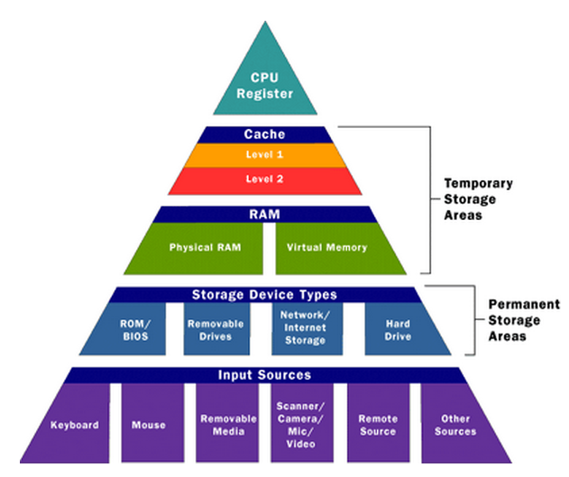
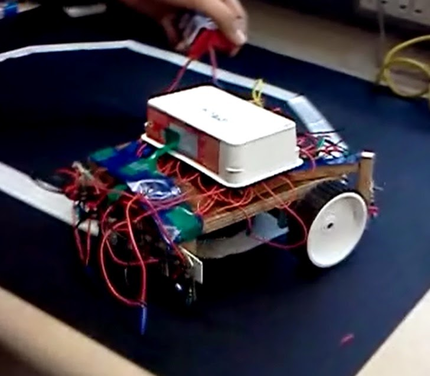

Projects
Here are some of my projects. You can click on the 'GitHub' button to view the code, or click on the 'YouTube' button to watch a video related to the project.
Projects under Special Problem (ECE 8903)

Approximate Computing
Approximate Computing
February 2015 - April 2015
- Programming Language: HTML, CSS, JavaScript, Python, Java
- Description:
- Currently working on a semester long research project under Prof. Hadi Esmaeilzadeh which involves designing a web based interactive game
- Consensus-oriented game system which is designed using 'HTML, CSS and JavaScript' collects general public's opinions regarding how much error is acceptable for a given application
- Sobel-filtered images are generated using 'Java' and database is maintained in 'Heroku', a cloud platform using 'Python'
Play Game GitHub Project Report
Projects under Advanced Programming Techniques (ECE 8893)
MandelBrot Set Display
November 2014 - December 2014
- Programming Language: C++
- Application Software: CUDA, OpenGL
- Description:
- Computed and displayed a visual image of the Mandelbrot Set
- Used OpenGL graphics API, and the CUDA GPU programming environment
GitHub YouTube Project Statement
OpenGL Jet
November 2014
- Programming Language: C++
- Application Software: OpenGL
- Description:
- Used the OpenGL graphics API to create and display a three-dimensional image of a jet aircraft
- Used keyboard input to control rotation, scaling, and lighting of the jet
GitHub YouTube Project Statement
RSA Algorithm
RSA Algorithm
October 2014
- Programming Language: C++
- Description:
- Implemented the RSA public-key encryption algorithm using the GNU multi-precision arithmetic library
- Generated public/private key pairs, random messages, encrypted the random message with the public key, decrypted the random message with the private key
- Verified that the decrypted message matches the original message
- Cracked the RSA algorithm by Factorization method
GitHub Project Statement
Templated Vector
Templated Vector
October 2014
- Programming Language: C++
- Description:
- Implemented a templated class called Vector, which is a variable length array
- Implemented an iterator called VectorIterator, which is used to point to an existing element in the Vector
GitHub Project Statement

POSIX Threads
2D DFT using POSIX Threads
September 2014
- Programming Language: C++
- Description:
- Computes a 2D Discrete Fourier Transform of a given input image, by computing 1D transforms on eacy row, followed by the 1D transforms on each column
- Implemented much efficient Danielson-Lanczos approach for the 1D transforms
- Used 16 threads to perform 1D transforms
GitHub Project Statement
MPI
2D DFT using MPI
September 2014
- Programming Language: C++
- Description:
- Reduced computation time of 2D DFT by using multiple CPUs in a cluster
- Implemented distributed computing by using Message Passing Interface (MPI)
GitHub Project Statement
Projects under Advanced Computer Architecture (ECE 6100)
Cache Coherence
Cache Coherence
November 2014 - December 2014
- Programming Language: C++
- Description:
- Designed a simulator that maintains coherent caches for 4, 8 and 16 core CMP
- Implemented MSI, MESI, MOSI, MOESI and MOESIF protocols for a bus-based broadcast system
GitHub Project Report
Tomasulo Algorithm
Superscalar Processor using Tomasulo Algorithm
November 2014
- Programming Language: C++, Python
- Description:
- Designed a simulator for an out-of-order Superscalar processor that uses Tomasulo Algorithm
- Wrote a Python script to vary parameters like Fetch Rate, number of Result Buses, number of Function Units to find the optimum combination that processes maximum IPC against minimum hardware cost
GitHub Project Report

Cache Simulator
Cache Simulator
September 2014 - October 2014
- Programming Language: C++, Python
- Description:
- Designed a parametric cache simulator with Write-Back Write-Allocate policy and LRU eviction
- Implemented victim cache and stride prefetching
- Wrote a Python script to vary and optimize Cache parameters to obtain a suitable minimal Average Access Time
GitHub Project Report
Projects under University of Mumbai
Wireless Diagnostic System
April 2014
- Programming Language: Android, Embedded C
- Application Software: Eclipse IDE, MikroC Pro
- Course: Final Year Project
- Description:
- Measured patient's body temperature and heart pulse using appropriate sensors
- Developed Android App to enter, store and send health parameters
YouTube Project Report

Wireless Display using ZigBee
Wireless Display using ZigBee
January 2013
- Programming Language: C, Embedded C
- Application Software: MATLAB
- Course: Tech Expo
- Description:
- Developed a Wireless notice board which displays messages when sent from the PC
- Used XBee explorer to receive data from the PC and send it to ATMEGA16
- Display the messages on the Graphic LCD

Intelligent Transhosp Medibot
Intelligent Transhosp Medibot
October 2012
- Programming Language: C
- Application Software:
- Course: Electronic Hardware Workshop
- Description:
- Improvised line follower robot so that it can meet the needs of a hospital
- Implemented line following, obstacle avoiding, and automated transporting
- Line follower robot can be used in hospital to transport medicines, linens and to dispose waste